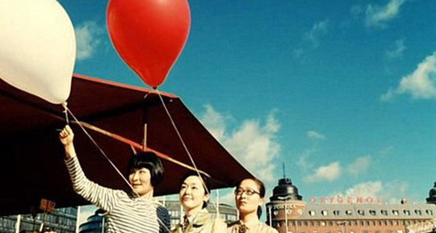

周一跟寿寿去吃粥底火锅，听她说她BF下半年可能会被公司派去芬兰好几个月。她还在想着一个人的生活该会很无聊，我却已经神游到了那个梦中一直想去的地方。北欧，一直在我和依树的心里占据着很特别的一角，一直梦想着能有机会去冰岛，或许冰岛太遥远，离我们更近的就是芬兰这样同属于北欧的国度。一瞬间，就想起了年初看的《海鸥食堂》，同样发生在芬兰的故事，2006年日本电影旬报十佳影片之一。 二月看的《海鸥食堂》，那时的北京还是寒冷的冬天，阳光却很灿烂。或许那时最接近北欧的样子吧。 海鸥慵懒绵长的声音响起时， 你一定在想那洒满日光的海岸。
幸惠独自在芬兰的一个镇子上开了一家日式小餐厅，主营饭团。幸惠希望以最简单但却最让人感到温暖的传统手卷留住客人的心，只可惜事与愿违，海鸥食堂经常空空如也。直到有一天来了一位很迷恋日本文化的芬兰小伙子，他每天都来，却只点一杯赠送的咖啡。他问她一部日本卡通片的主题歌，她记不清，去书店查，偶遇了闭上眼镜乱指地图决定旅行目标的小绿，小绿解答了关于主题歌的问题，开始到海鸥食堂帮忙。食堂的菜色开始有了些变化，加入了一些芬兰人爱吃的肉桂卷，慢慢有了一些顾客，却仍然没有人吃饭团。一天，食堂又来了一位日本人正子，她因为被空气吉他吸引，来到芬兰，却丢失了行李。她也留下在餐厅帮忙。三个日本女人，就这样走到了一起，开始他们简单平凡的生活。
看《海鸥食堂》，一切都那么安静， 安静到你可以闭上眼去聆听清脆的杯勺碰撞声， 料理时火苗亲吻食材的滋滋声， 一个人游泳的划水声，海浪涌上岸时的轻拍声， 风吹森林发出的哗哗声， 还有硬币掉落餐桌的啼嗒声和旋转声。不需要额外的音乐，这些细碎的小声音就是最美的音乐了。 最平凡的一天一天， 最平凡的女人， 却可以有最精致和幸福的时光。 正子失而复得的行李却变成了一箱金黄的蘑菇， 发着炫目的光。 那是上天赐予每一个热爱生活， 心存感激的女人的礼物。
下一次去森林的时候， 记得闭上眼去聆听风吹树林的沙沙声。
下一次看卡通的时候， 记得默默背下里面的主题歌。
下一次煮咖啡的时候， 记得对着咖啡壶念“Kobi Luak”的咒语。
下一次感觉孤独的时候， 记得做运动， 然后为自己做一餐朴素的食物慢慢享用。
永远记得做自己喜欢做的事。 永远记得微笑……